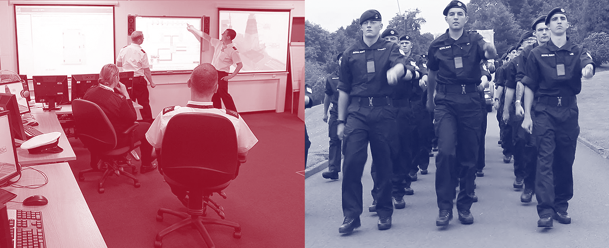
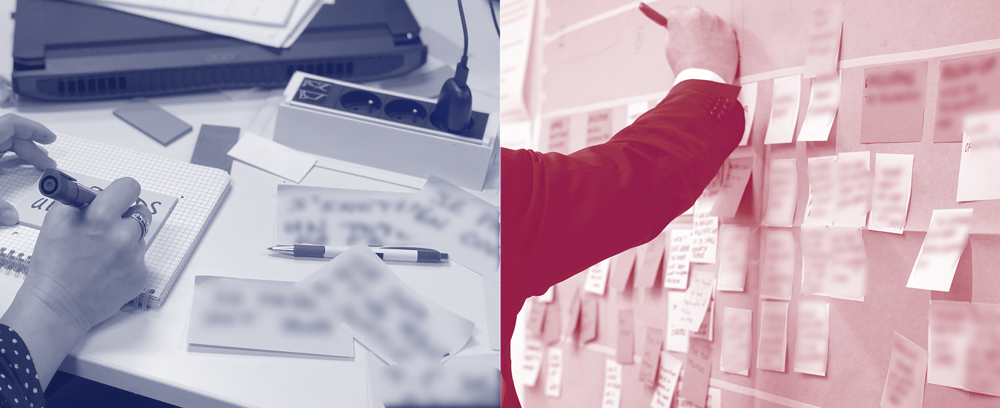
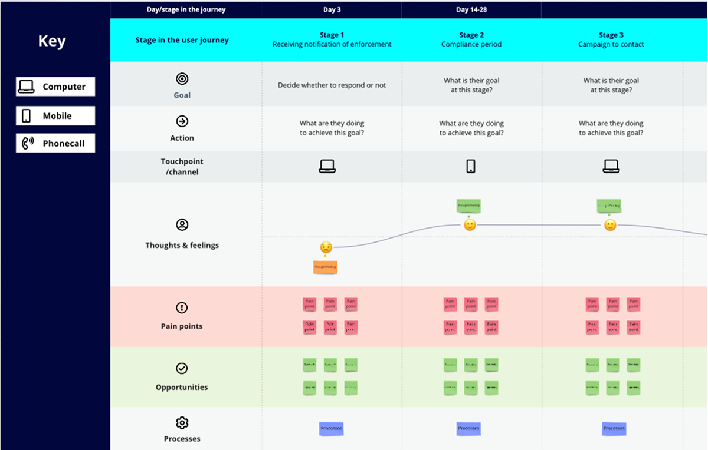
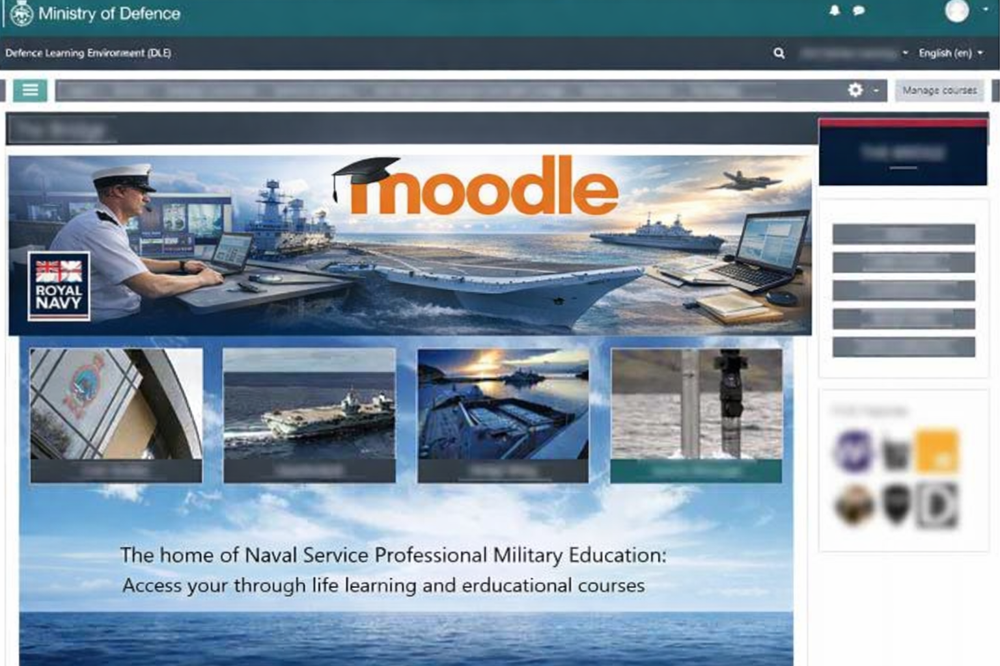

This is a ready-to-print page
Royal Navy (Government)
Enhancing the Defence Learning Environment (DLE)
The Defence Learning Environment (DLE) is the UK military’s central digital training platform, supporting learning across the Royal Navy, Army, and RAF. Used by personnel at every stage of their careers, the platform must function reliably in complex, high-pressure environments, often with limited connectivity and time. This project focused on transforming the DLE into a more accessible, intuitive, and effective learning experience, aligning digital training with the real conditions of military life.
The challenge
Access to learning was inconsistent, navigation could feel unclear, and usability issues made it harder for users to engage with training effectively.
Training also had to work within the realities of military life: strict hierarchy, varying technical confidence, multiple establishments, operational constraints, and situations where users might have limited connectivity or only short windows of time to learn.

Images of officers and recruits during training sessions and marching drills.
My role
Conducted research to understand who the main users were and what barriers they were facing when trying to access and use e-learning. We engaged with a wide range of stakeholders, from recruits to officers, to ensure the solution reflected real training needs rather than assumptions.
Process and approach
Discovery and research
Research and workshops were conducted to identify the main challenges and explore potential solutions to improve platform accessibility.
During this initial phase, I visited Royal Navy establishments throughout the country, including BRNC Dartmouth, HMS Collingwood, CTCRM Lympstone, and HMS Raleigh, facilitating workshops and assessing the platform’s current state with recruits and trainers.
Following a bespoke Design Thinking approach adapted to the hierarchical nature of military life, we tested and iterated on solution hypotheses by involving the client throughout the process via workshops, presentations, and structured feedback.
The work included business process mapping, impact maps, ecosystem mapping, stakeholder mapping, personas, empathy maps, user journeys, user flows, reports with key findings, living prototypes, and a custom design system adapted to the legacy environment.


Images from workshops where we gathered behavioural insights (empathy maps) and mapped the user journey
Service Design
We made service design recommendations to improve access to e-learning by scoping personas, tasks and goals, mapping user journeys, and conducting workshops and interviews both face-to-face and remotely across different Royal Navy establishments.
We also collaborated with key stakeholders to help support a more agile mindset and improve adoption of the e-learning platform through culture change, not just interface change.

Example of the DLE service design blueprint user experience
Prototyping and testing
Through iterative prototyping and testing on the legacy Moodle platform, we uncovered opportunities to significantly improve accessibility, learning outcomes, and engagement across the DLE. Our work went beyond interface design, rethinking how learning is experienced in real operational contexts.

What we focused on improving
-
→
Improved access and usability
Mobile optimised experience, offline access for low connectivity environments (such as ships), single sign-on (SSO), and simplified navigation to help users quickly find and start learning. -
→
Flexible, role-based learning
Adaptive learning paths tailored to role, experience, and prior knowledge, supported by clearer pathways, “next steps” and "where-you-left-off" functionality. -
→
More effective learning
Introduction of microlearning (short 5–10 minute modules), scenario-based and branching simulations, and mastery learning with frequent checks and targeted support to ensure understanding before progression. -
→
Stronger engagement and collaboration
Gamification features (badges, progress tracking, challenges), peer learning through forums, and opportunities for cross-branch knowledge sharing across the Royal Navy, Army, and RAF. -
→
Content clarity and retention
Visual and example-led learning with problem-based tasks to improve recall and real-world application. -
→
System and delivery improvements
Offline learning packages (SCORM/xAPI), Moodle based LMS configuration, accessibility standards (WCAG 2.1 AA), and suggestion of analytics to track enrolment, progression, and completion. -
→
Adoption and change enablement
"Train-the-trainer" sessions, internal champions, and simple support materials (for instance, short "how-to videos") to help embed new practices and reduce reliance on support teams.
My contribution
I contributed across discovery, service design, UX strategy, prototyping, testing, and handover, with around 90% ownership of the UX process from early research through to recommendations and delivery support.
My core impact was making previously hidden user needs visible. By engaging directly with recruits and visiting Royal Navy establishments, I uncovered critical gaps between how the platform was designed and how it was actually used in real training environments.
The existing system reflected a more traditional, hierarchical approach to learning, which, while important culturally, was limiting usability and effectiveness for a new generation of recruits. I helped reframe this by introducing user-centred insights, clearer learning pathways, and more accessible interaction patterns.
This work laid the foundation for a shift towards a more modern, flexible, and effective learning experience, and provided the initial structure and direction for ongoing improvements across the DLE.